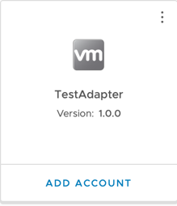

Get Started¶
This guide will walk through setting up the SDK and using the SDK to create, test, and install a simple Management Pack (integration) in VMware Cloud Foundation (VCF) Operations.
Requirements¶
Operating System:¶
The VCF Operations Integration SDK has been tested on the following operating systems:
- Windows 10
- Windows 11
- macOS 12 (Monterey)
- macOS 13 (Ventura)
- Debian Linux
- Fedora Linux
Other operating systems may be compatible.
VCF Operations¶
The Management Packs generated by the VCF Operations Integration SDK will only run on versions that support containerized Management Packs. Currently, this is limited to on-prem installs, version 8.10 or later. In addition, at least one Cloud Proxy (also version 8.10 or later) must be set up in VCF Operations, as containerized Management Packs must be run on a Cloud Proxy collector.
Prerequisites¶
- Docker 20.10.0 or later. Updating to the latest stable version is recommended. For instructions on installing Docker, go to Docker's installation documentation, follow the instructions provided for your operating system. Finally, make sure the Docker default socket is enabled in the Advanced tab in Settings (version 4.18.0 and above).
-
A container registry, set up so that:
- You have write access to a repository for pushing an image
- The repository is public, so that the image can be pulled anonymously (e.g., without first doing a
docker login) - The registry is accessible by your VCF Operations Cloud Proxies
See the Container Registry FAQ for additional information.
-
Python3 3.9.0 or later. Updating to the latest stable version is recommended. Python 3.8 and earlier (including Python2) are not supported. For instructions on installing Python, go to Python's installation documentation, and follow the instructions provided for your operating system.
- Pipx (recommended) or pip. If Python3 is installed, pip is most likely also installed. For instructions on installing pipx, go to pipx's installation documentation, and follow the instructions provided. For instructions on installing pip, go to pip's installation documentation, and follow the instructions provided.
- Git 2.35.0 or later. Updating to the latest stable version is recommended. For instructions in installing git, go to Git's installation documentation, and follow the instructions provided for your operating system.
- Azul Zulu JDK 17 (Only for Java Adapters). Java Adapters compile and run within a container, so a JDK is not strictly necessary, but it is generally useful for development. The container is built with Zulu JDK 17, so ideally this version should be used for maximum compatibility. To access the most recent Zulu JDK 17 release, visit azul.com.
Installation¶
To install the SDK, use pipx to install into an isolated environment. We recommend this in most cases to avoid dependency conflicts. Alternatively, pip can be used to install into the global environment, or to install into a manually-managed virtual environment.
Creating a Management Pack¶
After the SDK is installed, create a new project, by running mp-init. This tool asks a series of questions that guide
the creation of a new management pack project.
Warning
Running mp-init as root is not recommended, as this requires some directories to have escalated permissions.
-
Enter a directory to create the project in. This is the directory where adapter code, metadata, and content will reside. If the directory doesn't already exist, it will be created. Path:The path can be an absolute or relative path. The path should end in an empty or non-existing directory. If the directory does not exist, it will be created. This directory will contain a new Management Pack project.
-
Management Pack display nameThe Management Pack display name will show up in VCF Operations (Data Sources → Integrations → Repository), or when adding an account.

This Management Pack's display name is 'TestAdapter', and uses the default icon
-
Management Pack adapter keyThis field is used internally to identify the Management Pack and Adapter Kind. By default, it is set to the Management Pack display name with special characters and whitespace stripped from it.
-
Management Pack descriptionThis field should describe what the Management Pack will do or monitor.
-
Management Pack vendorThe vendor field shows up in the UI under 'About' on the Integration Card.

This Management Pack's vendor is 'VMware'
-
Enter a path to a EULA text file, or leave blank for no EULAVCF Operations requires a EULA file to be present in a Management Pack. If one isn't provided, a stub EULA file (
eula.txtin the root project directory) will be added to the project which reads: -
Enter a path to the Management Pack icon file, or leave blank for no iconThe icon is used in the VCF Operations UI if present. If it is not present, a default icon will be used. The icon file must be PNG format and 256x256 pixels. An icon file can be added later by copying the icon to the root project directory and setting the value of the
"pak_icon"key to the icon's file name in themanifest.txtfile. -
Select a language for the adapter:The language the adapter uses determines the initial project structure. Along with additional language-specific configuration. Currently,
mp-initoffers the following languages:-
Python -
Java
-
-
Select a template for your project:
Both of the available options will generate a project structure that can be modified into an adapter:
Sample Adapter: Creates a template adapter that collects several objects and metrics from the container the adapter is running. The template adapter has comments throughout its code that explain what the code does and how to customize it for your adapter.New Adapter: Creates methods, minimal comments, and code necessary to implement test connection, collection, adapter definition, and endpoints logic.
For the purposes of this Get Started guide, select Sample Adapter.
Enter package name:
The package name will be used to set up the package used by the adapter and the directory structure of the project.
-
Select a template for your project:
Both of the available options will generate a project structure that can be modified into an adapter:
Sample Adapter: Creates a template adapter that collects several objects and metrics from the container the adapter is running. The template adapter has comments throughout its code that explain what the code does and how to customize it for your adapter.New Adapter: Creates methods, minimal comments, and code necessary to implement test connection, collection, adapter definition, and endpoints logic.
Example
If your company name is mycompany.com, and you want to monitor mytechnology, you could enter com.mycompany.mytechnology as the package name.
This will generate the file structure below:
and it will also set the package in the Adapter.java file:
Baeldung has more information about naming Java packages.
For the purposes of this Get Started guide, select Sample Adapter.
Info
For complete documentation of the mp-init tool, including an overview of its output,
see the MP Initialization Tool Documentation.
Testing a Management Pack¶
In the Management Pack directory, the installation script writes a requirements.txt file containing the version of the
SDK used to generate the project, and installs the SDK into a virtual environment named venv. Note that the packages
in requirements.txt are not installed into the adapter.
To use the SDK, navigate to the newly-generated project directory and activate the virtual environment:
For Mac and Linux:
(This script is written for the bash shell. If you use the csh or fish shells, there are alternate activate.csh and activate.fish scripts you should use instead.) For Windows:Note
To exit the virtual environment, run deactivate in the virtual environment.
To test a project, run mp-test in the virtual environment.
If mp-test is run from anywhere outside the root project directory, the tool will prompt to choose a project, and will
test the selected project. If the tool is run from a project directory, the tool will automatically test that project.
mp-test will ask for a connection. No connections should exist, so choose New Connection. The test tool then
reads the conf/describe.xml file to find the connection parameters and credentials required for a connection, and
prompts for each. This is similar to creating a new Adapter Instance in the VCF Operations UI. Connections are automatically
saved per project, and can be reused when re-running the mp-test tool.
Note
In the sample adapter, the only connection parameter is ID, and because it connects to the container it is running on,
this parameter is not necessary; it is only there as an example, and can be set to any value. The template also implements an
example Test Connection. If a Test Connection is run (see below), with the ID set to the text bad, then the Test Connection
will fail.
The test tool also asks for the method to test. There are four options:
- Test Connection - This call tests the connection and returns either an error message if the connection failed, or an empty json object if the connection succeeded.
- Collect - This call test the collection, and returns objects, metrics, properties, events, and relationships.
- Endpoint URLs - This returns a list (possibly empty) of URLs that have distinct SSL certificates that VCF Operations can ask the end user to import into the TrustStore.
- Version - This returns the VCF Operations Collector API version the adapter implements. The implementation of this method is not generally handled by the developer.
For more information on these endpoints, see the Swagger API documentation. Each response is validated against the API.
For complete documentation of the mp-test tool see the MP Test Tool Documentation.
Building and Installing a Management Pack¶
To build a project, run mp-build in the virtual environment.
If mp-build is run from anywhere outside the root project directory, the tool will prompt to choose a project, and will
build the selected project. If the tool is run from a project directory, the tool will automatically build that
project.
Once the project is selected (if necessary), the tool will build the management pack and emit a pak file which can be
installed on VCF Operations.
The pak file will be located in <project root>/build/.
Note
Upon the initial use of mp-build in a given project, the tool will request the input of a container registry to push the container image.
To install the pak file, in VCF Operations navigate to Data Sources → Integrations →
Repository and click ADD. Select and upload the generated pak file, accept the README, and install the management pack.
To configure the management pack, VCF Operations navigate to Data Sources → Integrations →
Accounts and click ADD ACCOUNT. Select the newly-installed management pack and configure the required fields. For
Collector/Group, make sure that a cloud proxy collector is selected. Click VALIDATE CONNECTION to test the connection.
It should return successfully, then click ADD.
By default, a collection will run every 5 minutes. The first collection should happen immediately. However, newly-created objects cannot have metrics, properties, and events added to them. After the second collection, approximately five minutes later, the objects' metrics, properties, and events should appear. These can be checked by navigating to Environment → Object Browser → All Objects and expanding the Adapter and associated object types and object.
 The CPU object's
The CPU object's idle-time metric in a Management Pack named QAAdapterName.
For complete documentation of the mp-build tool see the MP Build Tool Documentation.
Next Steps¶
Now that you have an overview of setting up and using the SDK tools, you can delve deeper into the structure of each project:
- To understand the basic project structure required to develop and build a Management Pack, go to the mp-init documentation.
- To understand the specific project structure of Python Adapters, go to the Python Project documentation.
- To understand the specific project structure of Java Adapters, go to the Java Project documentation.
- For more documentation about Project Templates, including the Sample Adapter, consult the
Guidessection.